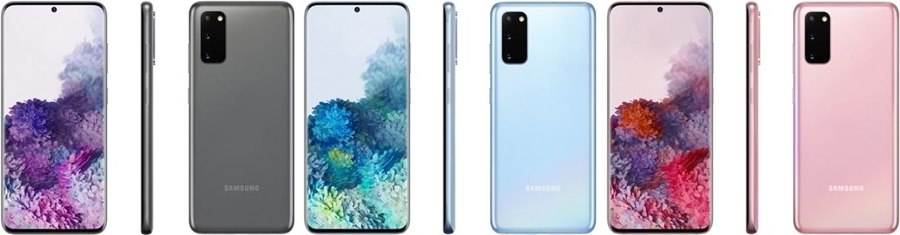
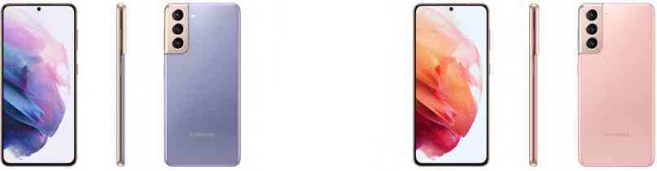

 Galaxy S20 5G(SM-G980 & SM-G981)
삼성전자가 2020년 2월 11일(한국 시각 2020년 2월 12일)에 공개한 안드로이드 스마트폰이다. 개발 코드네임은 Hubble로 명명되었다. 2010년 갤럭시 S를 시작으로, 매해 상반기에 공개된 삼성전자의 안드로이드 플래그십 스마트폰 시리즈인 갤럭시 S 시리즈의 2020년형 모델이자 11번째 모델들 중 하나이다. 다만, 정식 발매명은 공개년도인 2020년에 맞춰 '갤럭시 S11'이 아닌 '갤럭시 S20'으로 명명되었다. 한국 시각으로 2020년 2월 12일 오전 4시에 삼성 갤럭시 언팩 2020에서 공개되었다. 전반적인 디자인은 갤럭시 S8 및 S8+부터 내려오는 패밀리룩을 이루고 있다. 또한, 20:9 비율의 디스플레이를 탑재해 기기의 전면 면적이 94.2%로 대부분을 디스플레이가 차지하고 있다. 특히, 노치 디자인을 적용하지 않은 채 상단 정중앙에 전면 카메라를 위한 공간을 구멍으로 뚫어버리고 나머지는 전부 디스플레이로 할당하는 디자인을 적용했다. 그리고 후면 카메라 모듈이 좌측면으로 치우쳐 있는데 일명 '카툭튀' 디자인에 '인덕션' 디자인까지 모두 적용되었다. 또한, 갤럭시 S 시리즈 소속 스마트폰으로는 갤럭시 S 이후로는 처음으로 후면 카메라 모듈이 좌측면으로 치우쳐 있다. 기본 색상은 코스믹 그레이, 클라우드 블루, 클라우드 핑크, 클라우드 화이트로 총 4종이다.
 Galaxy S21 5G (SM-G991)
삼성전자가 2021년 1월 14일(한국 시각 2021년 1월 15일)에 공개한 안드로이드 스마트폰이다. 개발 코드 네임은 미술 도구인 Palette로 명명되었다. 2010년 갤럭시 S를 시작으로, 매해 상반기에 공개된 삼성전자의 안드로이드 플래그십 스마트폰 시리즈인 갤럭시 S 시리즈의 2021년형 모델이자 12번째 모델들 중 하나다. 정식 발매명은 공개년도인 2021년에 맞춰 '갤럭시 S21'로 명명되었다. 한국 시각으로 2021년 1월 15일 오전 0시에 갤럭시 언팩 2021에서 공개되었다. 전반적인 디자인은 갤럭시 S8 및 S8+부터 내려오는 패밀리룩을 이루고 있다. 또한, 전면의 대부분을 디스플레이가 차지하고 있다. 특히, 노치 디자인을 적용하지 않은 채 상단 정중앙에 전면 카메라를 위한 공간을 구멍으로 뚫어버리고 나머지는 전부 디스플레이로 할당하는 디자인을 적용했다. 그리고 후면 카메라 모듈이 좌측면으로 치우쳐 있는데 일명 '카툭튀' 디자인에 '인덕션' 디자인까지 모두 적용되었다. 카메라 모듈 전체가 측면 프레임과 일체화되어 있는데, 이런 디자인을 삼성전자는 '컨투어 컷 카메라' 디자인이라고 명명하였다. 기본 색상은 팬텀 바이올렛, 팬텀 화이트, 팬텀 그레이, 팬텀 핑크 총 4종이다.